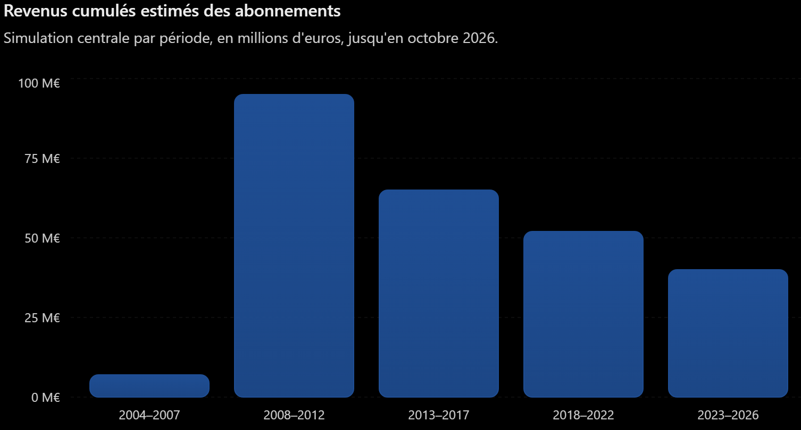
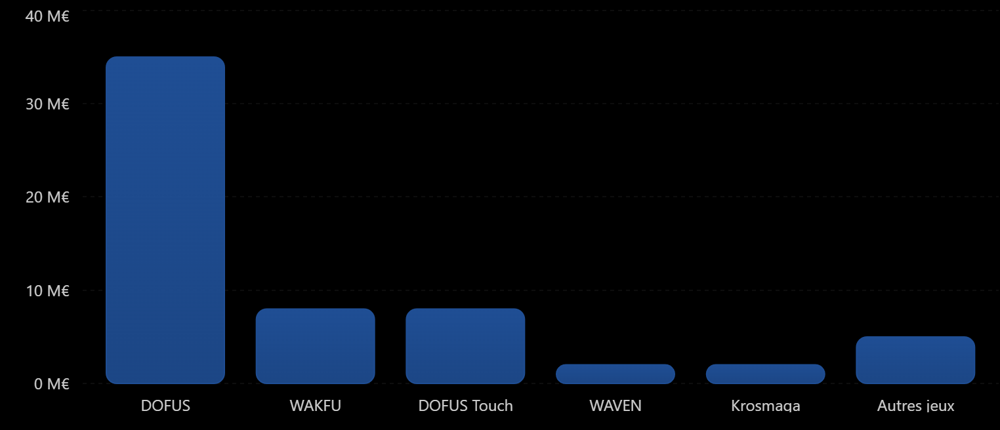
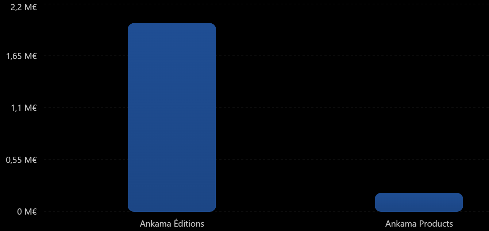
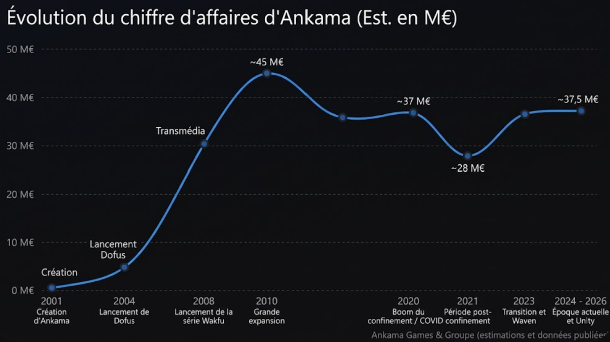
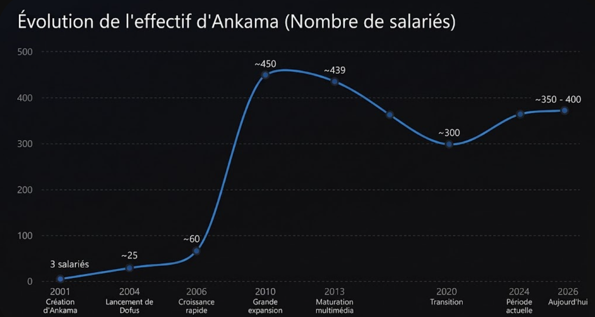
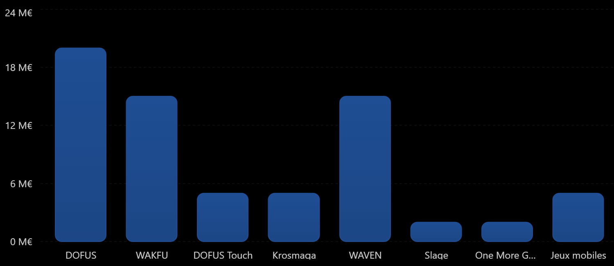
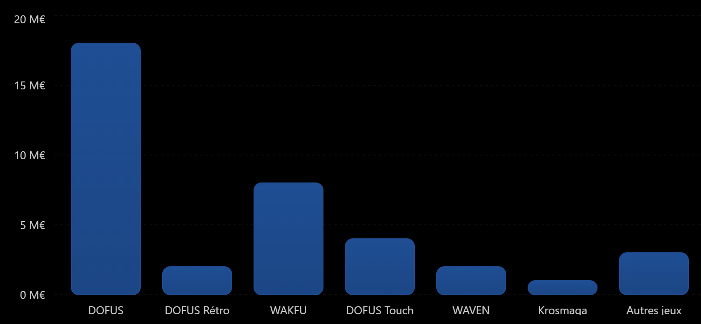

Economy
Ankama's main sources of revenue
subscriptions

approximately €260 million cumulative
DOFUS likely represents the majority of historical subscription revenue. Other games may contribute, but their respective shares are not publicly known. This simulation estimates player payments before deducting costs and taxes. Therefore, it does not represent Ankama's net profit.
virtual purchases
nearly €60 million earned from virtual purchases
DOFUS €35M WAKFU €8M DOFUS Touch €8M WAVEN €2M Krosmaga €2M Other games €5M represents in-game purchases available in Ankama games excluding subscriptions.

merchandise

after manufacturing, transport, distribution, and other expenses , Ankama Éditions generated approximately €1.99 million in revenue in 2024, while Ankama Products generated approximately €192,000.
revenue

from 0 to 45 million euros thanks to their games
Ankama's revenue increased sharply between 2001 and 2010, going from almost €0 to around €45 million thanks to the success of its games. After drops and fluctuations, it rises back to reach approximately €37.5 million in 2024–2026.
main expenses
salaries

with an average gross salary of €2,700, Ankama would spend approximately €42,000 per employee per year, before other operating expenses related to premises, equipment, and software.
Since the average annual salary cost is €42,000, it can be deduced that the total amount paid by Ankama is approximately €16.55 million for the year 2026 with an average salary cost of €42,000 and a workforce of 394 employees worldwide.
game development
By adding up the central values from the chart, we get approximately 69 million euros spent on game development alone (not including money spent on maintenance and updates).
Game Approximate proposed cost Reliability DOFUS €10–30M WAKFU €8–20M DOFUS Touch €3–8M Krosmaga €3–8M WAVEN €8–20M Slage €2M Kiwix Server One More Gate: A Wakfu Legend €1–4M Other mobile games combined €2–8M

server maintenance

maintenance has cost a cumulative total of approximately 38 million euros for server maintenance and game infrastructure.
For maintenance, hosting, databases, backups, security, technical maintenance, and the employees working on the servers must be factored in. Ankama notably confirms carrying out regular maintenance and game data backups. We can particularly see that between creation and today, Ankama has spent 18 million euros (€) for DOFUS, 2 million euros (€) for DOFUS Retro, and 8 million euros (€) for WAKFU.